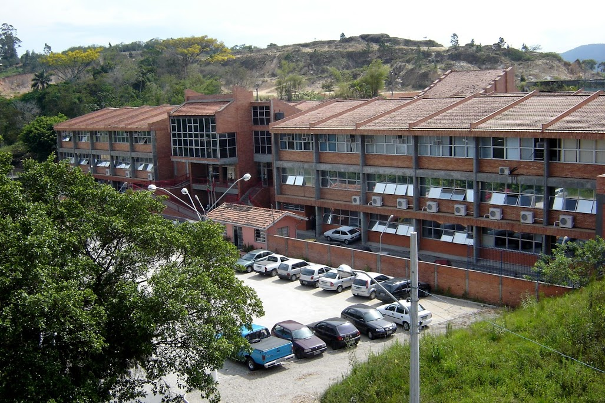

Victor Lacerda
Vida Acadêmica
Atualmente cursando o segundo semestre de Análise e Desenvolvimento de Sistemas no IFSC - SJE.

Emerson Ribeiro de Mello

Jadina Amaro
Cleber Amaral
Bruno de Azevedo
Diego Medeiros
Volnei Velleda
Ramon Mayor

Participante do Centro Acadêmico de Análise e Desenvolvimento de Sistemas na área de comunicação.